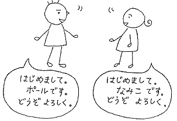

| Namiko: | Hadžimemašite, Namiko desu. Dózo jorošiku. |
| Paul: | Hadžimemašite, Paul desu. Dózo jorošiku. |
| 奈美子: | はじめまして、奈美子です。どうぞよろしく。 |
| ポール： | はじめまして、ポールです。どうぞよろしく。 |
Wa je částice a dává se za podstatné jméno. Desu（です）je přísudek, dá se přeložit, jako "je" nebo "jsou".
| Wataši wa Namiko desu. 私は奈美子です。 | Já jsem Namiko. |
| Kore wa hon desu. これは本です。 | Tohle je kniha. |
Japonci často vynechávají podmět, když je zřejmý z kontextu.
Při představování se může být "Wataši wa(私は)" vynecháno. Japoncům to bude znít přirozeněji. V rozhovoru se "Wataši(私)" používá málokdy a "Anata(あなた）", což znamená "ty" se jednoduše vynechává.
"Hadžimemašite(はじめまして)" se používá, když se potkáváte poprvé. Při seznamování. "Hadžimeru（はじめる）" znamená "začít". "Dózo jorošiku（どうぞよろしく）" se používá při seznamování nebo žádání o pomoc/službu.
Kromě kruhu rodiny a blízkých přátel se Japonci oslovují příjmeními. Pokud se dostanete do Japonska, jako student, pravděpodobně se na Vás budou lidé obracet křestním jménem, ale v zaměstnání nebo byznise se oslovuje příjmením. Proto se představují nejprve příjmením.
| Namiko: | Těší mě, já jsem Namiko. Ráda vás poznávám. |
| Paul: | Těší mě, já jsem Paul. Rád vás poznávám. |